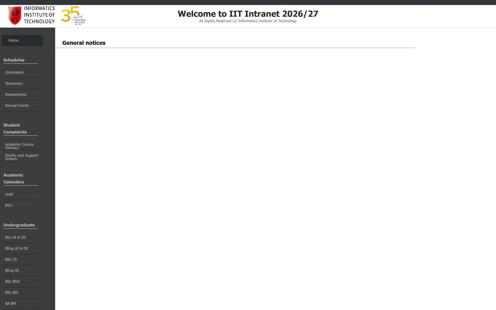
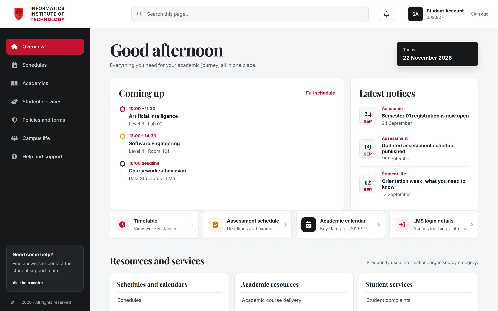

One dashboard for today
The overview opens on what matters now: the day's classes with times and rooms, coursework deadlines, the latest notices, and shortcuts to the timetable, assessment schedule, academic calendar and LMS.
IIT Intranet is a redesigned student portal for the Informatics Institute of Technology. Today's classes, deadlines and notices come first, with timetables, module resources and UoW and RGU forms one click away.
Press Try the live demo at the top of the page and sign in with any email and password.
See what changed

The current intranet lists every resource in one sidebar. The prototype sorts them into an overview and six sections.
| Area | Before | After |
|---|---|---|
| Finding things | About 50 links in a single sidebar | An overview and six sections |
| Search | No search box | Search on every page that filters as you type |
| Today | A general notices page | Today's classes, deadlines and notices on the dashboard |
| Reading | 12px menu links | 14px menu links, stronger contrast, keyboard-friendly pop-ups |
Current intranet as seen at in.iit.ac.lk on 22 November 2026.
The dashboard, the sign-in page and three of the six sections. Select a screenshot to see it full size.
The overview opens on what matters now: the day's classes with times and rooms, coursework deadlines, the latest notices, and shortcuts to the timetable, assessment schedule, academic calendar and LMS.
Google or a student email gets you in. Forgot password opens a reset form you can try.
Class timetables, temporary changes, assessment schedules and annual events, which the current intranet spreads across separate sidebar links, sit together on one page.
Every degree, from BSc AI and Data Science to the MSc programmes and the foundation year, is grouped by level of study instead of listed one by one.
University of Westminster (UoW) and Robert Gordon University (RGU) forms get a card each, so a student on an RGU degree never opens a UoW mitigation form by mistake.
No. It is a front-end prototype built for the 5COSC021C Agile Team Project at the University of Westminster. Sign-in is simulated and does not check real IIT credentials.
Press Try the live demo and use any email and password, or the Google button. You land on the student dashboard. Sign out brings you back to this page.
Not yet. Resource and form links show a short message instead of opening a document. The sidebar moves between the seven pages.